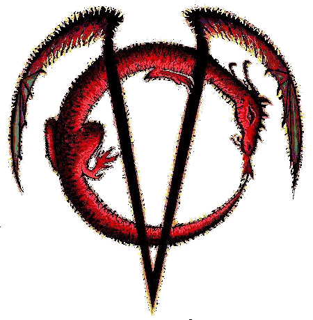

Авторские права на материалы © Авторские права на перевод

Copyright protected © Права защищены
Наше Сообщество является официальным участником Международного Сообщества Вампиров. С 2007 года мы занимаемся переводом материала с англоязычных сайтов. Нами получены официальное разрешение и благословение на перевод от таких известных лидеров, как: Sanguinarius, Merticus, SphynxCat и многих других. Сохранены все имена авторов статей, их переводчиков, редакторов и активные ссылки на оригиналы работ.
Мы делимся материалами нашего Сообщества с вами в открытом разделе. При копировании статей - сохраняйте полный текст статьи-оригинала, включая имена переводчиков статей и места перевода. Имейте совесть, и хоть немножко уважайте тех людей, которые часами переводили эти статьи и занимались их редактированием. Если вы этого не сделаете - мы будем относиться к этому как к банальному воровству.
P.S. для справки, сайты realvampires.do.am и vampirecommunity.ru - смежны, у них один администратор. Следовательно, авторские права распространяются на них одинаково и в обоих направлениях.
~Регент.